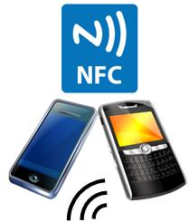

<div id="jsn-maincontent" class="span9 order1 row-fluid">
  <div id="jsn-maincontent_inner">
    <div id="jsn-centercol">
      <div id="jsn-centercol_inner">
        <div id="jsn-mainbody-content" class="jsn-hasmainbody">
          <div id="jsn-mainbody-content-inner1">
            <div id="jsn-mainbody-content-inner2">
              <div id="jsn-mainbody-content-inner3">
                <div id="jsn-mainbody-content-inner4" class="row-fluid">
                  <div id="jsn-mainbody-content-inner" class="span12 order1">
                    <div id="jsn-mainbody">
                      <div id="system-message-container"></div>

                      <div
                        class="item-page"
                        itemscope
                        itemtype="https://schema.org/Article"
                      >
                        <meta itemprop="inLanguage" content="en-GB" />

                        <div itemprop="articleBody">
                          <p></p>
                          <h1 style="text-align: center">
                            Near Field Communication (NFC)
                          </h1>

                          <p>
                            <strong
                              >What is NFC?</strong
                            ><br />An increasingly important form of
                            communication is Near Field Communication (NFC).
                            Just like Bluetooth, it lets you transfer pictures,
                            music and other files between devices. Many recently
                            manufactured devices now come with this technology
                            built into them and it's very simple to use. It's
                            also fast! If you have a recent phone or tablet, go
                            into the Settings area, and then into the area for
                            networks / wireless and see if you can find NFC. If
                            you can't find it, have a look for your make and
                            model online, to see if it is hidden in the settings
                            somewhere.&nbsp;
                          </p>
                          <p>
                            <strong>NFC and Bluetooth compared</strong
                            ><br />Bluetooth has a range of about 10 metres. The
                            range of NFC is about 4 cm. Devices have to be
                            almost touching for data transfer to take
                            place.&nbsp;Bluetooth transfers data at about 24
                            million bits every second. NFC transfers data at
                            about 300 million bits every second so it is about
                            10 times quicker. NFC uses very little power in most
                            circumstances. You have to set Bluetooth by going
                            through a 'pairing' process and this can take a few
                            seconds. NFC connections are made almost
                            instantaneously and because the devices are
                            practically touching, don't suffer from
                            interference.
                          </p>
                          <p>
                            <strong>How do you use it?</strong><br />If you want
                            to send a photo to a friend and both of your phones
                            had NFC, then the first thing to do is switch the
                            NFC on in both phones via the settings. Then you
                            select a photo. Then you hold the two phones
                            together for a second! That's it. The connection is
                            made and the photo will be transferred to your
                            friend's phone. It's this simplicity and speed that
                            makes it perfect for a range of applications, apart
                            from just transferring files between friends.
                          </p>
                          <p>
                            <strong>What can it be used for?</strong><br />Your
                            phone can now be used to do all kinds of very clever
                            things. You could download a bus or train pass to
                            your phone or buy a plane ticket and have that
                            downloaded. If you needed to get on a bus or train,
                            you can just hold up your phone to the NFC reader
                            and the correct amount of money will be taken from
                            your balance automatically. If you needed to get on
                            a plane, you can just hold your phone out to a
                            reader so that you can pass security gates. If you
                            needed to pay for of goods in a shop, you don't need
                            to carry money around - just hold your phone next to
                            the reader and the correct amount will be read. If
                            you are visiting somewhere and you have a security
                            pass, you can use your phone to pass through
                            security. When you visit somewhere and are at a
                            particular place, or perhaps walking around a
                            museum, you can hold your phone up to a transmitter
                            that can send your phone some information about
                            where you are or what you are looking at. All of
                            these applications aren't really suitable for
                            Bluetooth because of the amount of time it takes to
                            set up connections, but for NFC technology, they're
                            ideal.
                          </p>
                          <p>
                            <strong>NFC tags</strong><br />One particular fun
                            thing you can do with NFC is to buy some little NFC
                            tags and program them using a free or paid-for App
                            from your App store. It is very easy to do. You can
                            program them to give out information or to make
                            certain actions happen like opening and playing a
                            particular MP3 file. Then, when someone touches the
                            tag with their NFC-enabled phone, the file or
                            instructions are transmitted to the phone!&nbsp;
                          </p>
                          <p>
                            <strong>Q1.</strong> What does NFC stand for?<br /><strong
                              >Q2.</strong
                            >
                            Compare the working range of Bluetooth to NFC.<br /><strong
                              >Q3.</strong
                            >
                            Compare the data transfer speed of Bluetooth to
                            NFC.<br /><strong>Q4.</strong> Describe how you
                            could use NFC to send a photo to a friend's
                            phone.<br /><strong>Q5.</strong> What is an NFC
                            tag?<br /><strong>Q6.</strong> How do you program an
                            NFC tag?&nbsp;
                          </p>
                          <p>
                            <strong>Extension tasks</strong><br /><strong
                              >a)</strong
                            >
                            If your phone or other device has NFC, find someone
                            who also has NFC on their phone or tablet PC. Send a
                            file. Receive a file.<br /><strong>b) </strong>Do
                            some research on the Internet. Describe some actual
                            uses around the world that uses NFC technology,
                            which are already in place today.<br /><strong
                              >c)</strong
                            >
                            Program some NFC tags.
                          </p>
                          <p></p>
                        </div>
                      </div>
                    </div>
                  </div>
                </div>
              </div>
            </div>
          </div>
        </div>
      </div>
    </div>
  </div>
</div>
